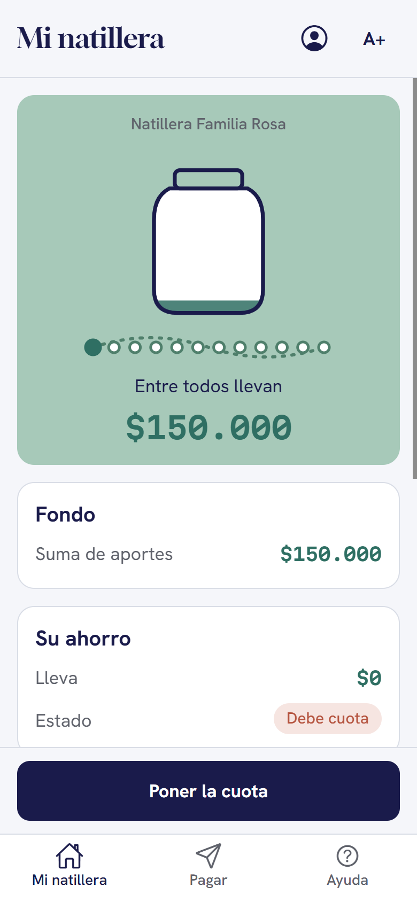
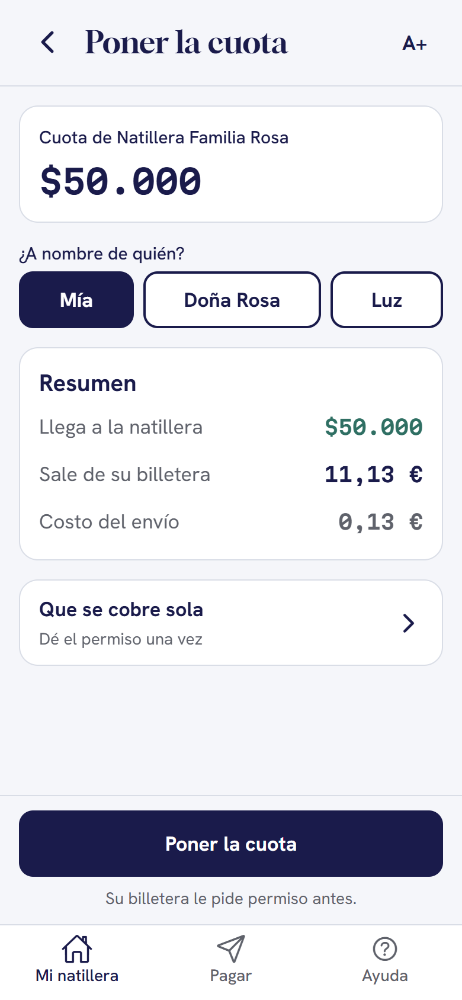
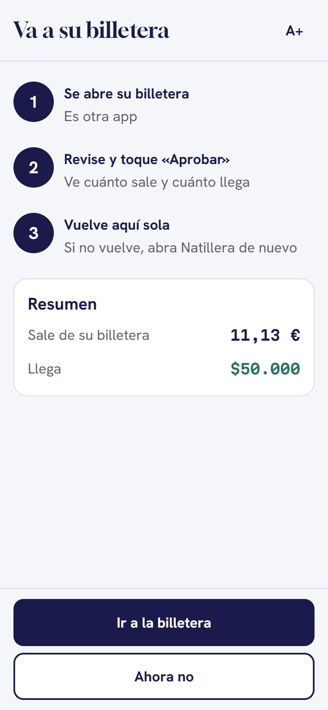
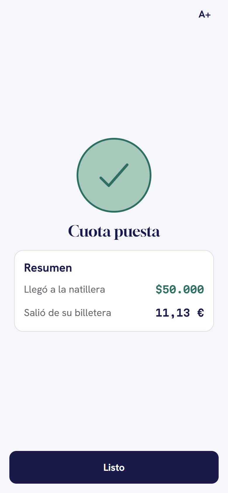
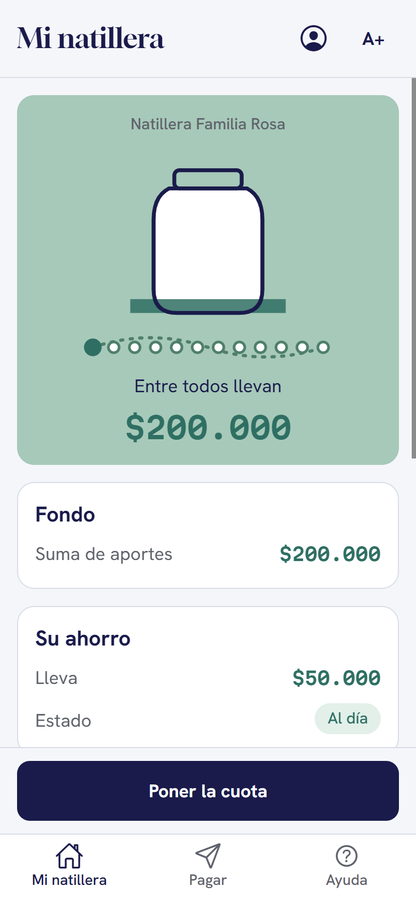
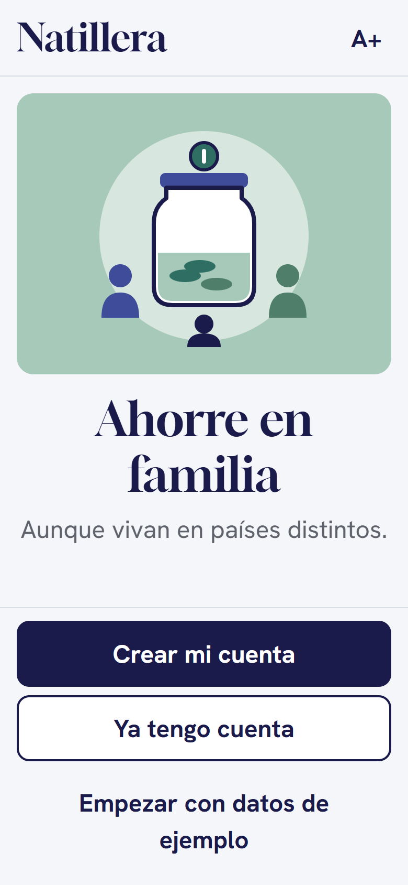
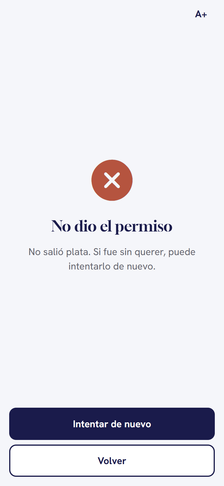

Natillera
SIN FRONTERAS
Lejos en distancia, juntos en el ahorro.
Hackatón Open Payments · InterledgerMedellín · 17 oct 2026
Una familia, tres países
Ella es Doña Rosa. Su natillera vive en un cuaderno.
Natillera · octubreRosa ✓ $50.000
Luz ¿giro?$50.000
Andrés … debe
Total: ¿?
Luz ¿giro?
Andrés … debe
Total: ¿?
Doña RosaMedellín, Colombia · la tesoreraPesos · COP
LuzEstados UnidosDólares · USD
AndrésEspañaEuros · EUR
El problema
La plata sí cruza fronteras. La natillera, no.
US$13.098 M
llegaron a Colombia en remesas en 2025, un 10,6 % más que en 2024.
~18 %
de los hogares recibe plata de un familiar en el exterior.
Diciembre
fue el mes récord. Es el mismo mes en que se reparte la natillera.
Fuente: Banco de la República
La solución
La natillera de siempre, ahora en el celular.
- Cada quien pone su cuota desde su billetera, en su moneda.
- Al fondo de la natillera le llegan pesos.
- Todos ven lo mismo: cuánto hay, quién está al día y quién pidió prestado.
«Ahorre en familia, aunque vivan en países distintos.»

EN VIVO
Andrés pone su cuota desde España.

1 · LA CUOTAVe antes cuánto sale en euros y cuánto llega en pesos
→

2 · SIN SUSTOSLe contamos en tres pasos qué va a pasar
→
SU BILLETERALa natillera quiere hacer un pagoAprobarRechazar
3 · SU PERMISOÉl aprueba en su propia billetera
→

4 · LISTOCuota puesta, en menos de un minuto
Por debajo, y de verdad
La app nunca toca la plata. Solo pide permiso.
Pago real EUR → COP con Open PaymentsCuentas realesNatilleras y socios en el servidor
LA APPNatillera
Muestra cuánto sale y cuánto llega, y pide el permiso.
BILLETERA DE ANDRÉSÉl apruebasale en €
LA TUBERÍAInterledger · Open Payments
Mueve la plata entre billeteras y monedas.
FONDO DE LA NATILLERALlega a casallega en $
Y en Medellín…
Doña Rosa lo ve de una.
+$50.000desde España, en euros

Inclusión financiera
Hecha para Doña Rosa, no para un banquero.
De «usted»Frases cortas, cero palabras raras.
A+ en todoLa letra crece en todas las pantallas.
Botones grandesPara el dedo, con buen contraste.
Sin letra menudaEl costo se ve antes de pagar.
Siempre pide permisoSi dice que no, no sale ni un peso.


Lo que viene
La natillera completa.
YA EN LA APPPréstamos del fondo
Simular, pedir y que la tesorera decida.
YA EN LA APPMetas en familia
Ahorrar para algo o hacer una colecta.
SIGUELa cuota que se pone sola
Un permiso, y cada mes llega sin acordarse.
H
Henry
App, marca y pitch
C
Camilo
App y servidor
D
Duvan
Servidor y pagos
DC
David Ciro
Servidor y nube
Este diciembre, Doña Rosa no va a sacar el cuaderno.
Va a abrir el celular, ver que Luz puso, que Andrés puso, y repartir la natillera con toda la familia.
Ahorre en familia, aunque vivan en países distintos.
Lejos en distancia, juntos en el ahorro.
GRACIAS